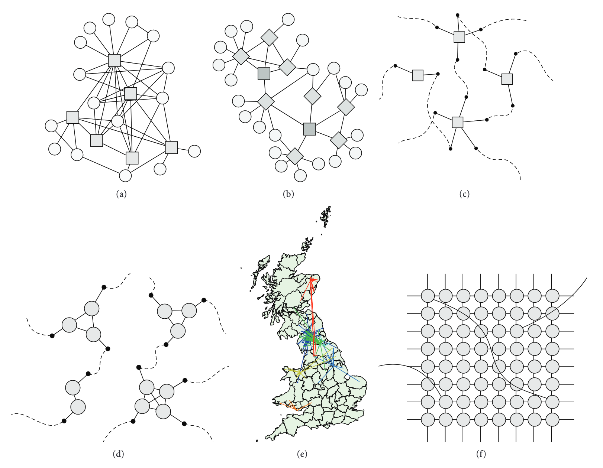
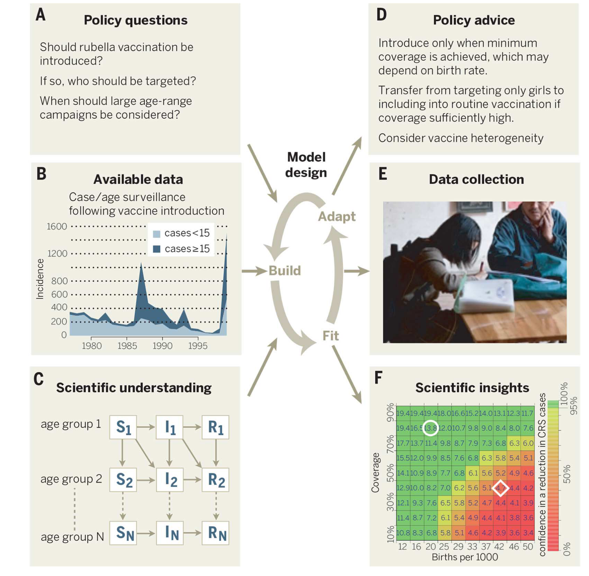

Overview of infectious disease model types
- Infectious disease models can be classified in several ways:
- Mathematical approach: mechanistic vs. phenomenological
- Randomness: deterministic vs. stochastic
- Time: discrete vs. continuous
- Space: spatial vs. non-spatial
- Population structure: homogeneous vs. heterogeneous
- The choice of model type depends on:
- Research question being addressed
- Available data and its quality
- Computational resources and time constraints
- Expertise of the modelling team
- Intended audience and use case
Mathematical approach: Mechanistic vs. Phenomenological
Mechanistic models
- Model the underlying biological processes of disease transmission
- Include explicit representations of:
- Host-pathogen interactions
- Disease natural history
- Population mixing patterns
- Examples: SIR, SEIR, agent-based models
Phenomenological models
- Focus on describing patterns in data
- Do not explicitly model biological mechanisms
- Often statistical in nature
- Examples: curve fitting, time series models, regression models
Mechanistic models: Advantages and disadvantages
Advantages:
- Can provide biological insights
- Allow testing of intervention scenarios
- Can extrapolate beyond observed data
- Parameters often have biological interpretation
Disadvantages:
- Require detailed knowledge of biological processes
- Can be complex to develop and validate
- May require extensive data for parameterization
- Computationally expensive
Phenomenological models: Advantages and disadvantages
Advantages:
- Simpler to develop and implement
- Good for short-term predictions
- Require less detailed data
- Computationally efficient
Disadvantages:
- Limited biological insight
- Poor extrapolation capabilities
- Cannot easily test interventions
- May not capture underlying dynamics
Deterministic vs. Stochastic models
Deterministic models
- Same input always produces same output
- Use differential equations or difference equations
- Represent average behavior of the system
- Examples: classical SIR/SEIR models
Stochastic models
- Include random variation
- Same input can produce different outputs
- Account for uncertainty and chance events
- Examples: stochastic SIR, branching processes
When to use deterministic vs. stochastic models?
Deterministic models
Best for:
- Large populations (>10,000)
- Understanding general trends
- Parameter estimation
- When computational efficiency is important
Limitations:
- Cannot capture fade-out in small populations
- No uncertainty quantification
Stochastic models
Best for:
- Small populations (<1,000)
- Early epidemic phases
- Uncertainty quantification
- Extinction events
Limitations:
- Computationally intensive
- Require multiple runs
- More complex to implement
Time: Discrete vs. Continuous models
Discrete time models
- Time progresses in fixed steps (hours, days, weeks)
- Use difference equations
- Natural for surveillance data
- Examples: daily case counts, weekly reports
\[S_{t+1} = S_t - \beta S_t I_t\]
Continuous time models
- Time flows continuously
- Use differential equations
- Better for theoretical analysis
- Examples: classical epidemic models
\[\frac{dS}{dt} = -\beta S I\]
Time scale considerations
- Disease natural history:
- Acute diseases (days) → discrete time often sufficient
- Chronic diseases (years) → continuous time may be better
- Data availability:
- Daily surveillance data → discrete time natural
- Continuous monitoring → either approach possible
- Research question:
- Policy timing → discrete time practical
- Theoretical insights → continuous time elegant
Spatial considerations
Non-spatial (well-mixed) models
- Assume homogeneous mixing
- All individuals have equal contact probability
- Simpler to analyze and implement
- Good for small, homogeneous populations
Spatial models
- Account for geographic structure
- Include movement patterns
- Can model local transmission
- Important for large-scale epidemics
Types of spatial models
- Metapopulation models:
- Discrete patches connected by migration
- Good for cities/regions connected by travel
- Network models:
- Individuals as nodes, contacts as edges
- Can represent social or transportation networks
- Continuous space models:
- Individuals distributed in continuous space
- Include local transmission kernels
Population structure: Homogeneous vs. Heterogeneous
Homogeneous models
- All individuals are identical
- Same contact rates
- Same susceptibility
- Simpler to analyze
Heterogeneous models
- Account for individual differences:
- Age groups
- Risk behaviors
- Vaccination status
- Geographic location
- More realistic but complex
Common types of heterogeneity
- Age structure: Different contact patterns and susceptibility by age
- Risk groups: High-risk vs. low-risk populations
- Behavioral differences: Compliance with interventions
- Immunity status: Vaccinated, previously infected, naive
- Geographic: Urban vs. rural, different regions
Network models: A special class
- Represent individuals as nodes
- Contacts/relationships as edges
- Can capture:
- Social networks
- Sexual networks
- Transportation networks
- Hospital networks

Network model advantages
- Capture realistic contact patterns
- Can model targeted interventions (e.g., contact tracing)
- Account for superspreading events
- Useful for outbreak investigation
Network model challenges
- Require detailed contact data
- Computationally intensive
- Network structure may be unknown or time-varying
Agent-based models (ABMs)
- Model individual agents and their interactions
- Each agent has:
- Individual characteristics
- Behavioral rules
- Interaction patterns
- System behavior emerges from individual interactions
- Very flexible but computationally intensive
Agent-based model applications
- Household transmission: Model within-household spread
- School closures: Impact on different age groups
- Behavioral responses: How people change behavior during epidemics
- Contact tracing: Effectiveness of different strategies
- Vaccination campaigns: Optimal distribution strategies
Model selection framework
The modelling for decision-making process

Summary: Choosing the right model type
- Start simple: Begin with the simplest model that addresses your question
- Add complexity gradually: Only when justified by data or research needs
- Consider your audience: Policymakers may prefer simpler, more interpretable models
- Validate carefully: More complex models require more validation
- Document assumptions: Be explicit about model limitations
Common model progression
- Homogeneous compartmental (SIR/SEIR) → understanding basic dynamics
- Add heterogeneity → age groups, risk groups
- Add spatial structure → metapopulation, networks
- Add stochasticity → uncertainty quantification
- Individual-based → complex behaviors, interventions
Next: Deep dive into compartmental models
- Now that we understand the landscape of infectious disease models…
- We’ll focus on compartmental models - the most widely used approach
- Starting with the fundamental concepts and building up to specific models (SIR, SEIR)
- These form the foundation for most infectious disease modelling